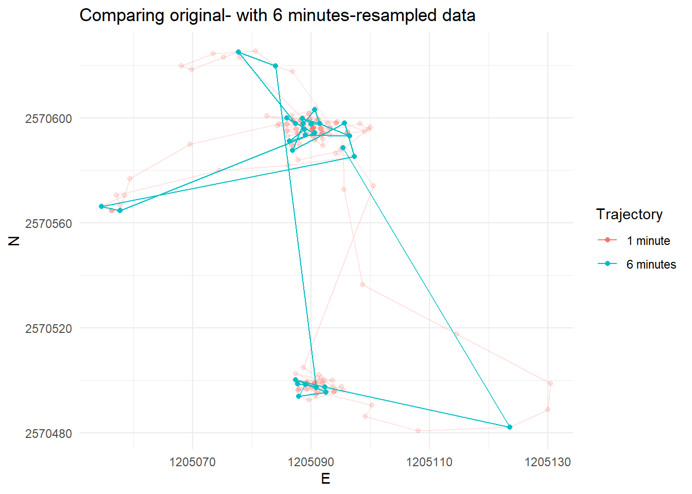
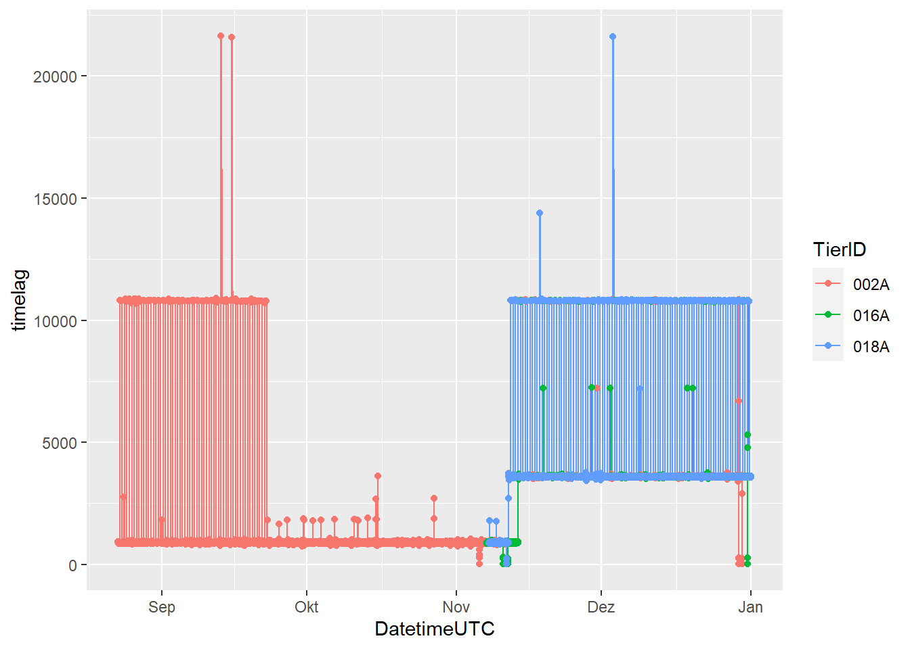
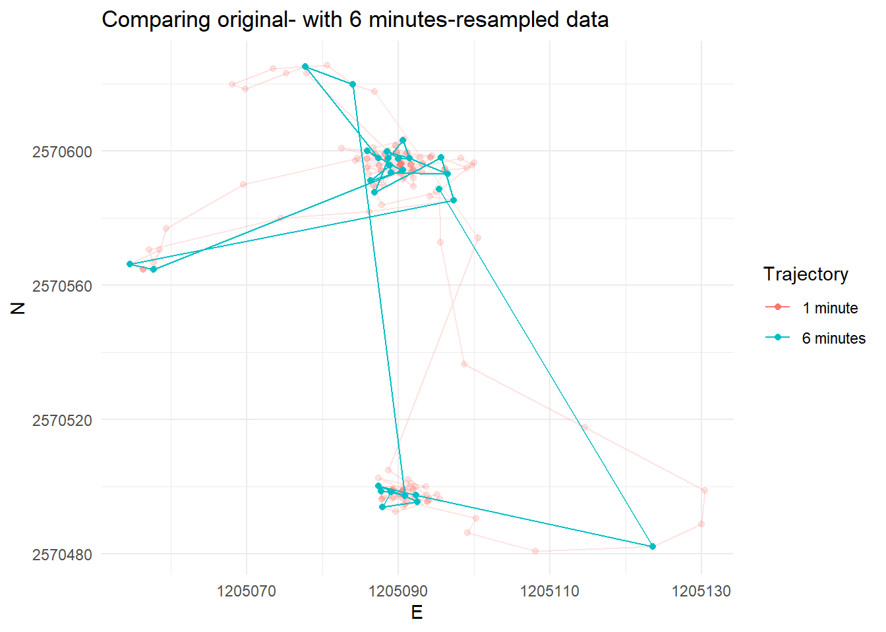
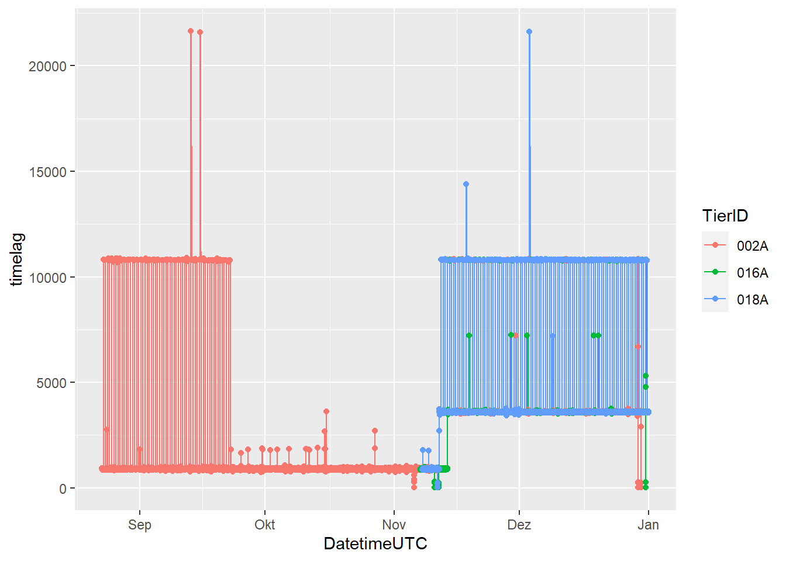
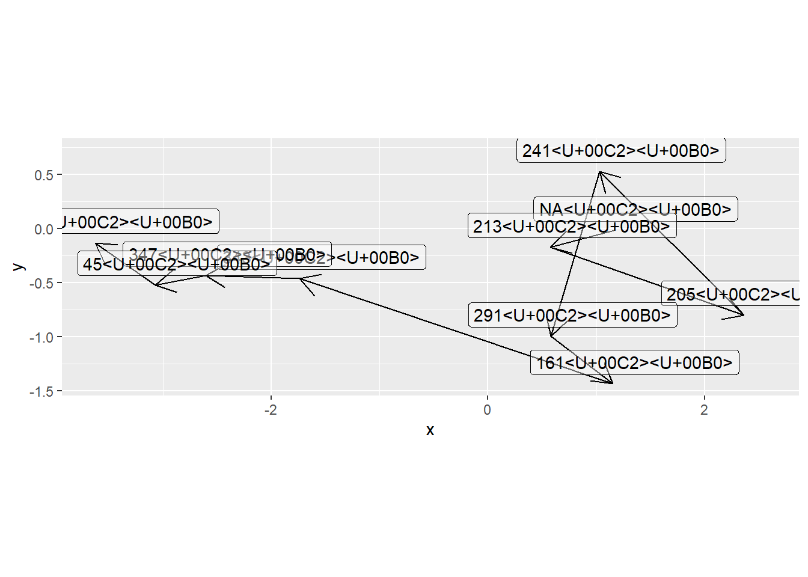
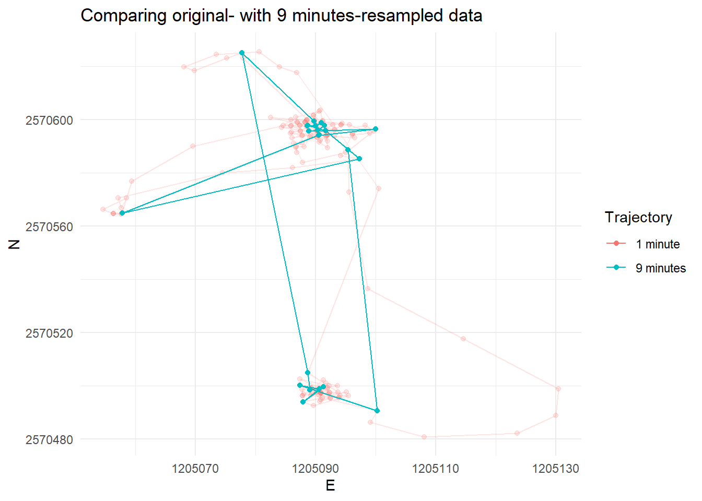
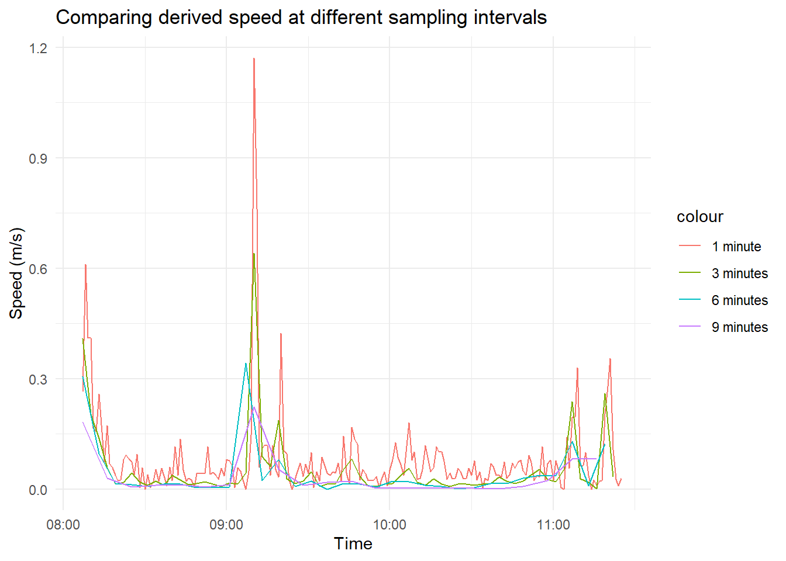
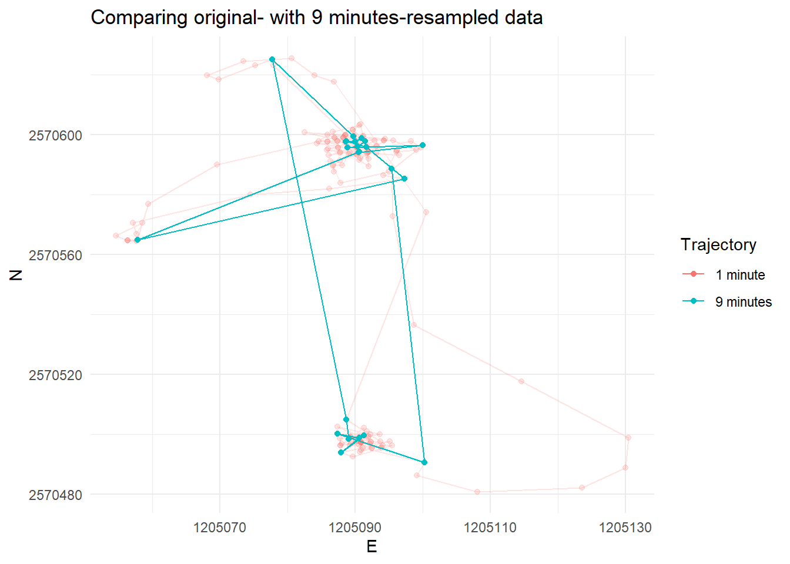
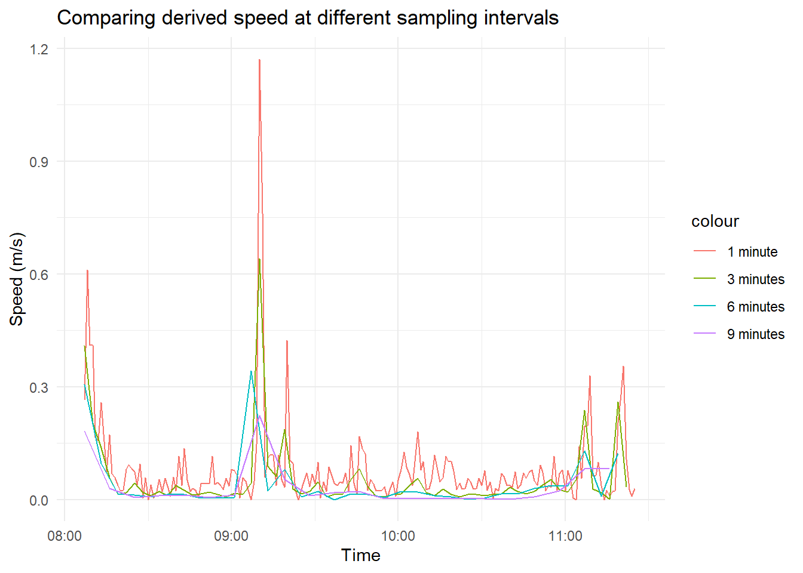

Exercise 2
Learning Outcomes
- You understand the dplyr functions
mutate,summariseandgroup_byand can apply them tosfobjects - You can derive movement parameters (
timelag,steplength,speed) from trajectory data. - You can re-sample your trajectory data for cross-scale movement analysis.
Prerequisites
Readings Skills from “R for Data Science” (Wickham and Grolemund 2017):
- RS2.1 Chap3 Data Transformation with
dplyr(31p, 43-76) - RS2.2 Chap10 Relational data with
dplyr(21p, 171-193) - RS2.3 Chap14 Pipes with
magrittr(6p, 261-268)
Readings Theory
- R2.1 Laube and Purves (2011): How fast is a cow? cross - scale analysis of movement data.
Preperation
Install the package zoo to get access to the rolling window functions for last exercise.
install.packages("zoo")Import the wild boar data and convert it to an sf object with CH1903+ LV95 Coordinates. Either run your own script from last week or the following lines to bring the data to the form we need it for today exercise.
library(tidyverse)
library(sf)
library(lubridate)
wildschwein_BE <- read_delim("00_Rawdata/wildschwein_BE.csv",",")
wildschwein_BE = st_as_sf(wildschwein_BE,
coords = c("Long", "Lat"),
crs = 4326)
wildschwein_BE <- st_transform(wildschwein_BE, 2056)Demo Tidyverse
Depending on your knowledge of R, getting an overview of the data we imported last week might have been quite a challenge. Surprisingly enough, importing, cleaning and exploring your data can be the most challenging, time consuming part of a project. RStudio and the tidyverse offer many helpful tools to make this part easier (and more fun). You have read chapters on dplyr and magrittr as a preparation for this exercise. Before we start with the exercise however, this demo illustrates a simple approach offered by tidyverse which is applicable to sf-objects.
Assume we want to calculate the timelag between subsequent positions. To achieve this we can use the function difftime() combined with lead() from dplyr. Let’s look at these functions one by one.
difftime
difftime takes two POSIXct values.
now <- Sys.time()
later <- now + 10000
time_difference <- difftime(later,now)You can also specify the unit of the output.
time_difference <- difftime(later,now,units = "mins")difftime returns an object of the Class difftime. However in our case, numeric values would be more handy than the Class difftime. So we’ll wrap the command in as.numeric():
str(time_difference)
## 'difftime' num 166.666666666667
## - attr(*, "units")= chr "mins"time_difference <- as.numeric(difftime(later,now,units = "mins"))
str(time_difference)
## num 167lead() / lag()
lead() and lag() return a vector of the same length as the input, just offset by a specific number of values (default is 1). Consider the following sequence:
numbers <- 1:10
numbers
## [1] 1 2 3 4 5 6 7 8 9 10We can now run lead() and lag() on this sequence to illustrate the output. n = specifies the offset, default = specifies the default value used to “fill” the emerging “empty spaces” of the vector.
lead(numbers)
## [1] 2 3 4 5 6 7 8 9 10 NA
lead(numbers,n = 2)
## [1] 3 4 5 6 7 8 9 10 NA NA
lag(numbers)
## [1] NA 1 2 3 4 5 6 7 8 9
lag(numbers,n = 5)
## [1] NA NA NA NA NA 1 2 3 4 5
lag(numbers,n = 5, default = 0)
## [1] 0 0 0 0 0 1 2 3 4 5This helps us performing operations on subsequent values in a vector (or rows in a table). You can think of this a little bit like a moving temporal window that moves along the trajectory, or down the rows of a table respectively.
mutate()
Using the above functions (difftime() and lead()), we can calculate the time lag, that is, the time difference between subsequent positions:
wildschwein_BE$timelag <- as.numeric(difftime(lead(wildschwein_BE$DatetimeUTC),
wildschwein_BE$DatetimeUTC,
units = "secs"))We mention wildschwein_BE three times in this function, which is complicated. Instead, we can use mutate() to simplify the syntax:
wildschwein_BE <- mutate(wildschwein_BE,timelag = as.numeric(difftime(lead(DatetimeUTC),
DatetimeUTC,
units = "secs")))group_by()
Now let’s have a look at the vector created before:
summary(wildschwein_BE$timelag)
## Min. 1st Qu. Median Mean 3rd Qu. Max. NA's
## -22648470 896 903 571 916 60367 1These values don’t make much sense: some are negative (which should not be the case) and some are very high (which would indicate large data gaps and should not be the case either). The reason for this result is that we did not consider that timelag should just be calculated between subsequent rows of the same individual. We can implement this by using group_by() (just as if calculating the convex hull last week).
wildschwein_BE <- group_by(wildschwein_BE,TierID)After adding this grouping variable, calculating the timelag automatically accounts for the individual trajectories.
wildschwein_BE <- mutate(wildschwein_BE,timelag = as.numeric(difftime(lead(DatetimeUTC),
DatetimeUTC,
units = "secs")))
summary(wildschwein_BE$timelag)
## Min. 1st Qu. Median Mean 3rd Qu. Max. NA's
## 12 896 903 1408 916 60367 3summarise()
summary() returned the metrics over all individuals. If we want to summarise our data and get metrics per animal, we can use the dplyr function summarise(). In contrast to mutate(), which just adds a new column to the dataset, summarise() “collapses” the data to one row per individual (specified by group_by).
summarise(wildschwein_BE, mean = mean(timelag, na.rm = T))The above operation works fine on normal data.frames, but since wildschwein_BE is also an sf object, summarise actually merges all the points to a multipoint geometry, which takes a long time to calculate. In order to prevent this, we can set the objects geometry to NULL, which removes the spatial attribute.
summarise(st_set_geometry(wildschwein_BE,NULL), mean_timelag = mean(timelag, na.rm = T))
## # A tibble: 3 x 2
## TierID mean_timelag
## * <chr> <dbl>
## 1 002A 1286.
## 2 016A 1412.
## 3 018A 1599.Piping
The code above may be a bit hard to read, since it has so many nested functions which need to be read from the inside out. In order to make code readable in a more human-friendly way, we can use the piping command %>% from magrittr, which is included in dplyr and the tidyverse. The above code then looks like this:
wildschwein_BE %>% # Take wildschwein_BE...
st_set_geometry(NULL) %>% # ...remove the geometry column...
group_by(TierID) %>% # ...group it by TierID
summarise( # Summarise the data...
mean_timelag = mean(timelag,na.rm = T) # ...by calculating the mean timelag
)
## # A tibble: 3 x 2
## TierID mean_timelag
## * <chr> <dbl>
## 1 002A 1286.
## 2 016A 1412.
## 3 018A 1599.Bring it all together…
Here is the same approach with a different, smaller dataset:
pigs = data.frame(
TierID=c(8001,8003,8004,8005,8800,8820,3000,3001,3002,3003,8330,7222),
sex=c("M","M","M","F","M","M","F","F","M","F","M","F"),
age=c("A","A","J","A","J","J","J","A","J","J","A","A"),
weight=c(50.755,43.409,12.000,16.787,20.987,25.765,22.0122,21.343,12.532,54.32,11.027,88.08)
)
pigs
## TierID sex age weight
## 1 8001 M A 50.7550
## 2 8003 M A 43.4090
## 3 8004 M J 12.0000
## 4 8005 F A 16.7870
## 5 8800 M J 20.9870
## 6 8820 M J 25.7650
## 7 3000 F J 22.0122
## 8 3001 F A 21.3430
## 9 3002 M J 12.5320
## 10 3003 F J 54.3200
## 11 8330 M A 11.0270
## 12 7222 F A 88.0800
pigs %>%
summarise(
mean_weight = mean(weight)
)
## mean_weight
## 1 31.58477
pigs %>%
group_by(sex) %>%
summarise(
mean_weight = mean(weight)
)
## # A tibble: 2 x 2
## sex mean_weight
## * <chr> <dbl>
## 1 F 40.5
## 2 M 25.2
pigs %>%
group_by(sex,age) %>%
summarise(
mean_weight = mean(weight)
)
## # A tibble: 4 x 3
## # Groups: sex [2]
## sex age mean_weight
## <chr> <chr> <dbl>
## 1 F A 42.1
## 2 F J 38.2
## 3 M A 35.1
## 4 M J 17.8Tasks and Inputs
Task 1: Getting an overview
Calculate the time difference between subsequent rows as described in the demo (column timelag).
First, inspect your data in more detail. Try to answer the following questions:
- How many individuals were tracked?
- For how long were the individual tracked? Are there gaps?
- Were all individuals tracked concurrently or sequentially?
- What is the temporal sampling interval between the locations?
Here are some exemplary visualisation you could produce to answer these questions. Can you now answer the above questions?
 

Input: Geometry as columns
Last week, we transformed our data from a data.frame to an sf object. This turned our Lat/Long columns into a single geometry (list) column. While this is very handy for many spatial operations, accessing the coordinates directly becomes difficult. We therefore suggest storing the information twice, once as a geometry and once as a numeric value. To do this, we have to extract the Coordinates using st_coordinates(). We can store these values in a new variable and display them:
# Store coordinates in a new variable
coordinates <- st_coordinates(wildschwein_BE)
head(coordinates)
## X Y
## 1 2570409 1204752
## 2 2570402 1204863
## 3 2570394 1204826
## 4 2570379 1204817
## 5 2570390 1204818
## 6 2570390 1204825Note that that the column are named X and Y, while CH1903+ LV95 names the Axes E and N: let’s rename the columns appropriately. After this, we can use cbind() to “glue” the columns to our original sf-object.
colnames(coordinates) <- c("E","N")
wildschwein_BE <- cbind(wildschwein_BE,coordinates)
head(wildschwein_BE)
## Simple feature collection with 6 features and 7 fields
## geometry type: POINT
## dimension: XY
## bbox: xmin: 2570379 ymin: 1204752 xmax: 2570409 ymax: 1204863
## projected CRS: CH1903+ / LV95
## TierID TierName CollarID DatetimeUTC timelag E N
## 1 002A Sabi 12275 2014-08-22 21:00:12 904 2570409 1204752
## 2 002A Sabi 12275 2014-08-22 21:15:16 927 2570402 1204863
## 3 002A Sabi 12275 2014-08-22 21:30:43 924 2570394 1204826
## 4 002A Sabi 12275 2014-08-22 21:46:07 855 2570379 1204817
## 5 002A Sabi 12275 2014-08-22 22:00:22 888 2570390 1204818
## 6 002A Sabi 12275 2014-08-22 22:15:10 903 2570390 1204825
## geometry
## 1 POINT (2570409 1204752)
## 2 POINT (2570402 1204863)
## 3 POINT (2570394 1204826)
## 4 POINT (2570379 1204817)
## 5 POINT (2570390 1204818)
## 6 POINT (2570390 1204825)Task 2: Deriving movement parameters I: Speed
In this task we will derive some additional movement parameters from our trajectories. So far our trajectories only consist of a list of time-stamped spatial locations. So let’s calculate the animal’s steplength based on the Euclidean distance between two subsequent locations.
- You can calculate the Euclidean distance with the following formula:
sqrt((E1-E2)^2+(N1-N2)^2) - use
lead(E,1)to address the the rown+1(i.e. E2)
Why do we use E and N when calculating the Euclidean distance, and not Lat/Long? Now calculate the animals’ speed between subsequent locations based on the steplength as calculated in the previous task and the timelag between the locations. What speed unit do you get?
Task 3: Cross-scale movement analysis
Laube and Purves (2011) analyse animal movement across different scales (see below). We will do the same on a subset of our data.
!(Laube and Purves 2011: Black points are used in calculation of movement parameters (e.g. speed) at a given termporal scale.)(02_Images/laube_2011_2.jpg)
Import “Caro60”
In the first task, we saw that the animals are sampled at different frequencies. To simplify the task, we’ve prepared a dataset that includes 200 locations of a single wild boar with a constant sampling interval of 60 seconds. Import this dataset named “caro60.csv” (available on moodle) just like you imported the other wild boar data. NOTE: We’ve converted the positions to CH1903+ LV95 for your convenience. Consider this when transforming to sf!
Save this data to a new variable (we will use caro60).
Resample
Now manually reduce the granularity of our sampling interval by selecting every 3rd, 6th and 9th position.
If you like to stick to the tidyverse approach, you can use slice() to subset the dataset by row number. Slice takes an integer vector. Eg: slice(dataset, 1:10), returns the first 10 rows of a dataset, slice(dataset, c(1,5,10)) returns the 1st, 5th and 10th value of a dataset. Save each re-sampled dataset in a new variable. We will use caro60_3, caro60_6 and caro60_9.
You should now have 4 data sets with different number of rows:
nrow(caro60)
## [1] 200
nrow(caro60_3)
## [1] 67
nrow(caro60_6)
## [1] 34
nrow(caro60_9)
## [1] 23Update derived parameters
timelag, steplength and speed now have to be recalculated for the three re-sampled data sets. Do so as we illustrated in the Chapter Demo.
Visualize
Compare the speeds in a line plot and visualize the trajectories in a map (see examples below). Interpret the line plot, what do the different lines for the different temporal granularities tell you?
We’ve stored the geographic location of our point in the trajectory in three different forms in our dataset. Once as a geometry, once as E/N and once as lat/long. In our view, it is most practical to use the E/N (integer) columns of our data to map them in this task
geom_sf()does not plot lines, just points- Therefore, use
geom_path()andgeom_point()rather thangeom_sf()withinggplot - In contrast to
geom_sf(), you have to explicitly specify thex/ycolumns (in our caseE/N) withgeom_path()/geom_point() geom_line()does not work when mapping trajectory data, since it connects the observations in order of the variable on the x axis.geom_path()connects the observations in the order in which they appear in the data
 

Task 4: Deriving movement parameters II: Rolling window functions
A different approach would be to smoothen the derived parameters using a moving window function. The zoo package offers a variate of moving window functions (roll_*). Use roll_mean() to smooth the calculated speed. Familiarise yourself with this function by working on some dummy data, for example:
{kind=link}
library(zoo)
example <- rnorm(10)
rollmean(example,k = 3,fill = NA,align = "left")
## [1] -0.4274889 -0.2885408 -0.3880966 0.3556317 0.8621043 0.7375428
## [7] 0.7138661 -0.1544565 NA NA
rollmean(example,k = 4,fill = NA,align = "left")
## [1] -0.35809805 0.09312217 -0.29639511 0.60909686 0.86268485 0.53007694
## [7] 0.22653074 NA NA NANow run rollmeanon the speed variable of the subset (caro60). Visualize the output from your moving windows and compare different window sizes (k =).
Task 5 (optional): Calculate turning angles
Just like we did with speed in tasks 2 - 4, we could do the same with turning angles of the trajectory. If you like a challenge, try to calculate these with the same approach! Warning: this task is pretty complex. Note, as this task is optional, you don’t have to include it in your mandatory submission of Exercise 2!